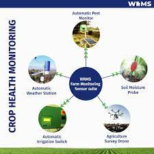
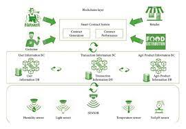

Precision FarmingAI technology is revolutionizing agriculture through precision farming, enabling smarter decisions and increased yields.Precision agriculture uses information technology (IT) to ensure that crops and soil receive exactly what they need for optimum health and productivity. This also ensures profitability, sustainability and protection of the environment. |
Crop Monitoring and ManagementUtilizing AI for crop monitoring and soil management helps farmers optimize resources and enhance overall productivity. Modern crop monitoring relies heavily on technology since it offers cutting-edge tools and methods for data gathering, analysis, and decision-making. Real-time monitoring of crop health, soil conditions, and weather patterns is now possible because of innovations like satellite imaging, drones, IoT sensors, and AI-powered analytics. |
 |
Weed and Pest ControlAI-powered solutions assist in identifying and managing weeds and pests efficiently, reducing the need for chemical interventions. |
Harvesting and SortingAutomation through AI facilitates efficient harvesting and sorting, improving overall efficiency and reducing labor costs. |
Smart Supply ChainAI enables predictive analytics in supply chain management, optimizing logistics and minimizing waste for a sustainable future. |
 |